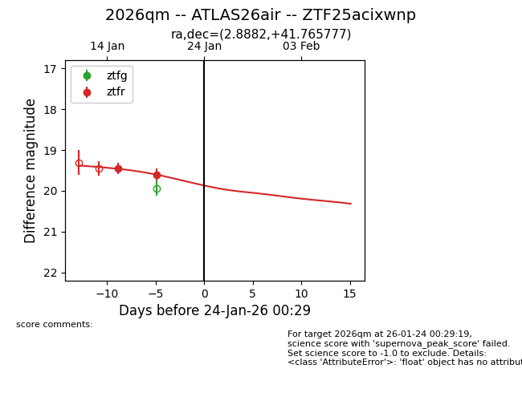
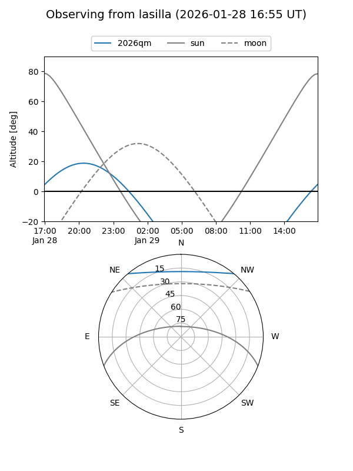
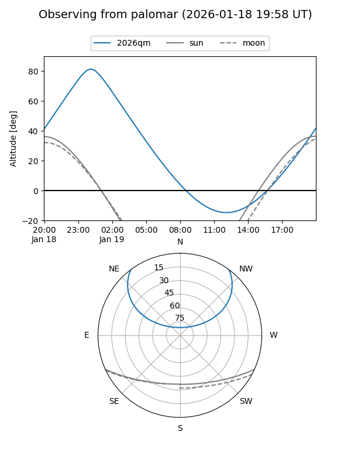
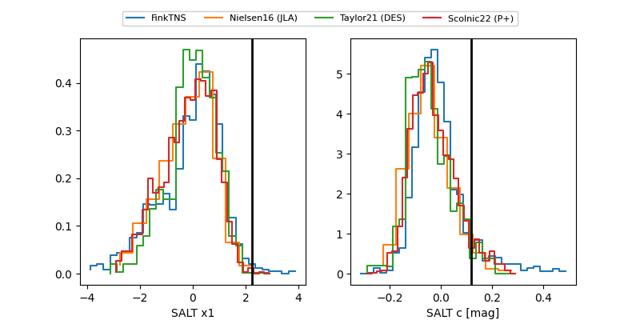

2026qm
Target 2026qm at 2026-01-21 03:01
Aliases and brokers:
FINK: link
Lasair: link
ALeRCE: link
TNS: link
YSE: link
alt names
ZTF25acixwnp (ztf,fink_ztf)
2026qm (tns,yse)
ATLAS26air (atlas)
Coordinates:
equatorial (ra, dec) = 2.8882,+41.76578
equatorial (HMS+DMS) = 00:11:33.17,+41:45:56.80
galactic (l, b) = (115.0070,-20.49140)
Flags:
Photometry:
last ztfr=19.60
2 ztfr detections
Lightcurve

Visibility


Additional plots
